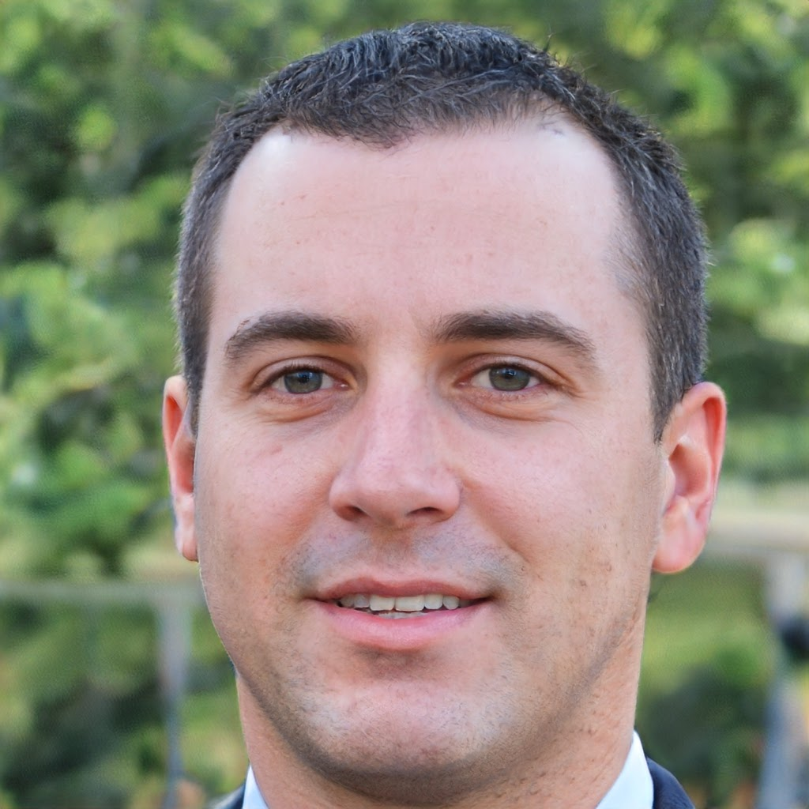

- 
- Kevin Leroy-Dunan
- 21 anni
- nato a Auberviliers, île-de-France
- Vive en Paul Bert, Auberviliers, île-de-France
- Batterista in una band Goth Metal / Apprendista macellaio
- Sono un batterista in una band Goth Metal che è un po' conosciuta nella scena, come gli AB+, ma bene, sono anche un apprendista di lato. Lavoro nel settore della vendita al dettaglio, assumono molto presto, il che mi lascia molto tempo la sera per la musica. Con COVID, abbiamo avuto un po' di crollo sulla scena, ma abbiamo il nostro canale che va ancora forte.
- Gwen Taylor
- 23 anni
- nato a Honolulu, HI, USA
- Vive en Tocqueville, Paris, île-de-France
- Ballerina
- Ciao, sono Gwen. Attualmente sono nella compagnia dell'Opera di Parigi come ballerino principale, e sarò il protagonista nella prossima serie di rappresentazioni di Lohengrin. Sono estremamente felice di vivere a Parigi, ma tra due anni vorrei trasferirmi a Milano, quindi il matrimonio è ora o mai più!